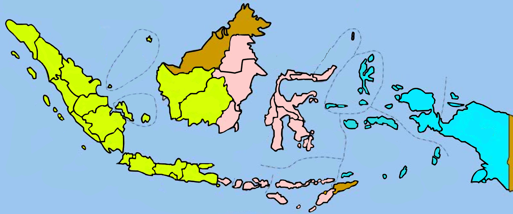

@intramusc_
085358172521
Toggle navigation
BERANDA
ARTIKEL
INTRAMUSC
KONTAK
MASUKAN
GALERI
×
Cari Provinsi
Ketik Disini Untuk Mencari Provinsi
Nama Provinsi
Ibu Kota
Aceh
Banda Aceh
Sumatera Utara
Medan
Sumatera Barat
Padang
Riau
Pekan Baru
Jambi
Jambi
Sumatera Selatan
Palembang
Bengkulu
Bengkulu
Lampung
Bandar Lampung
Bangka Belitung
Pangkal Pinang
Kepulauan Riau
Tanjung Pinang
DKI Jakarta
Jakarta
Jawa Barat
Bandung
Jawa Tengah
Semarang
DI Yogyakarta
Yogyakarta
Jawa Timur
Surabaya
Banten
Serang
Bali
Denpasar
Nusa Tenggara Barat
Mataram
Nusa Tenggara Timur
Kupang
Kalimantan Barat
Pontianak
Kalimantan Tengah
Palangkaraya
Kalimantan Selatan
Banjarmasin
Kalimantan Timur
Samarinda
Kalimantan Utara
Tanjung Selor
Sulawesi Utara
Manado
Sulawesi Tengah
Palu
Sulawesi Selatan
Makassar
Sulawesi Tenggara
Kendari
Gorontalo
Gorontalo
Sulawesi Barat
Mamuju
Maluku
Ambon
Maluku Utara
Sofifi
Papua
Jayapura
Papua Barat
Manokwari
Keep Smile
